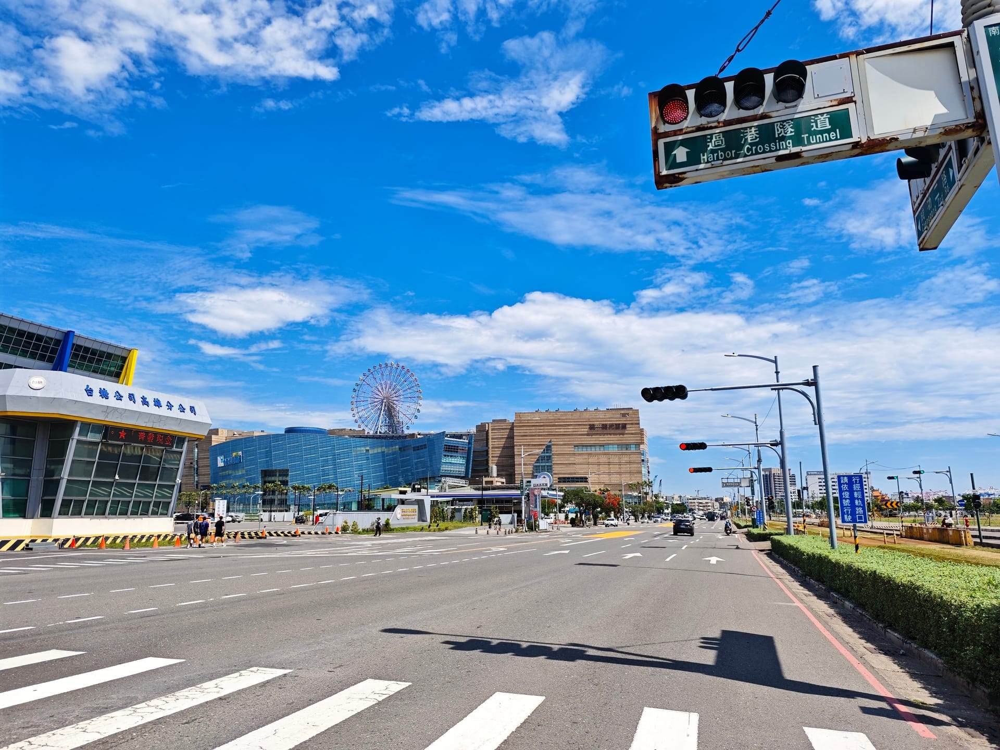
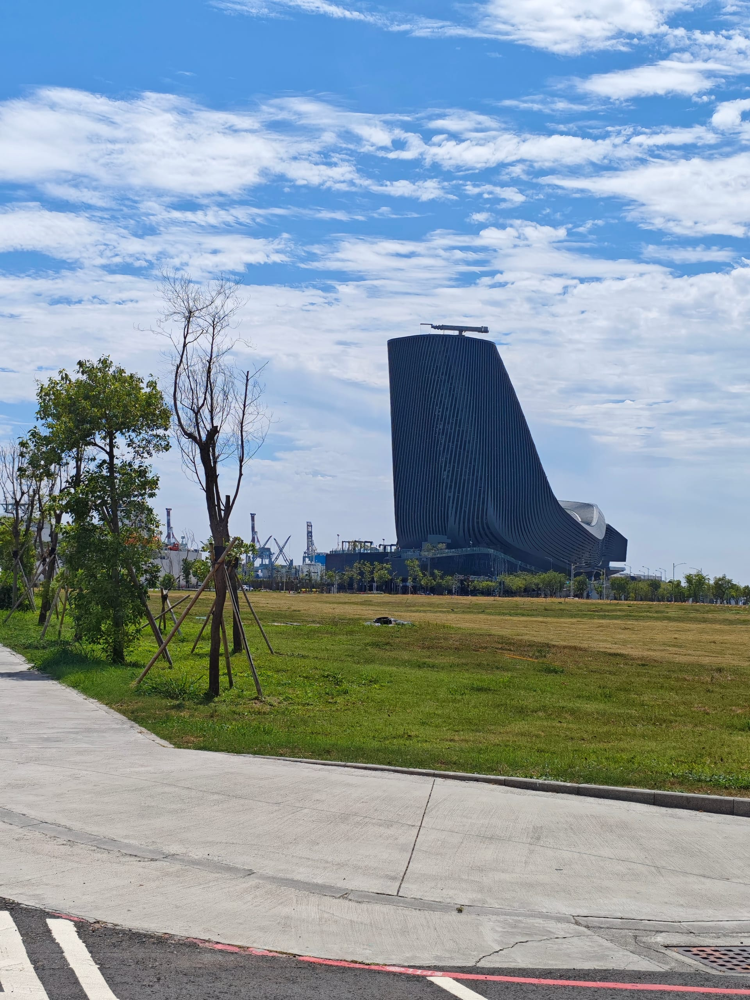
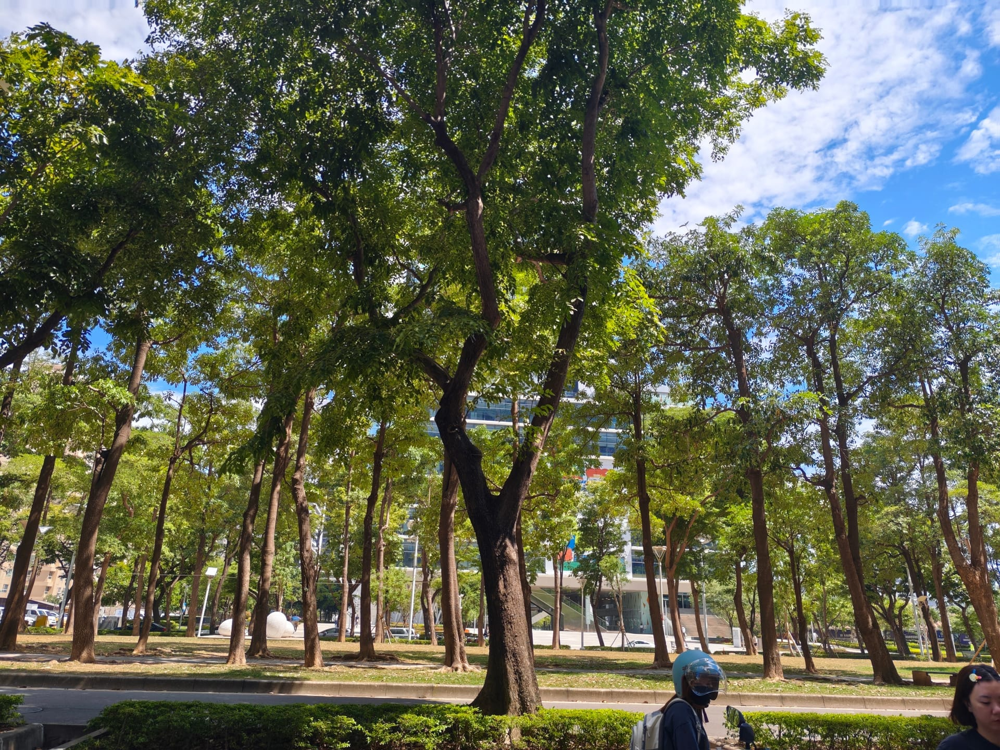
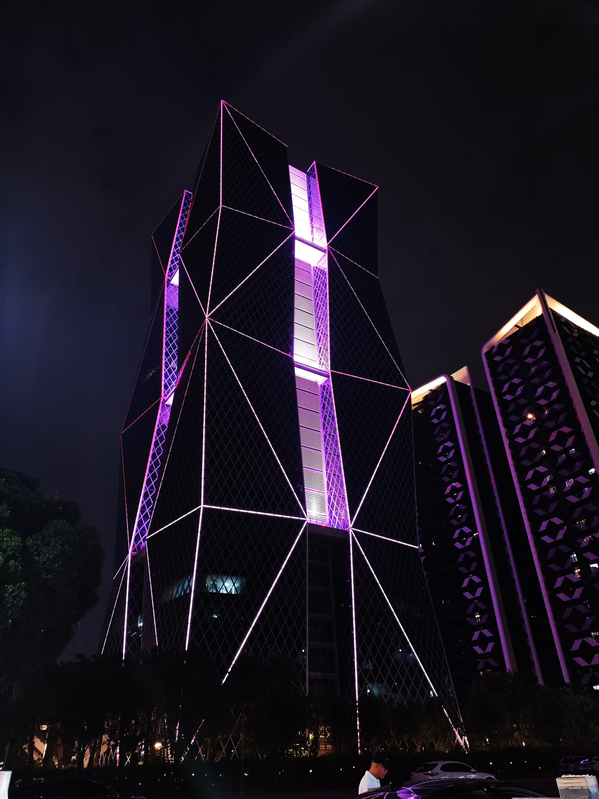
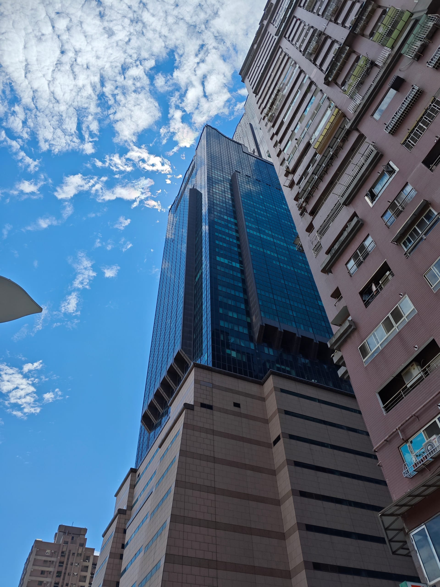
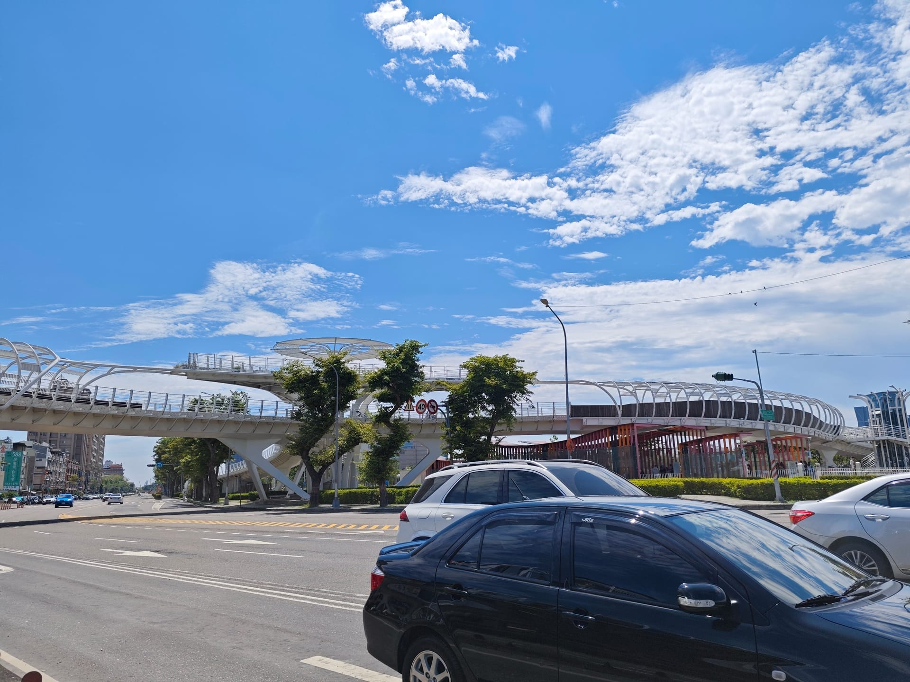
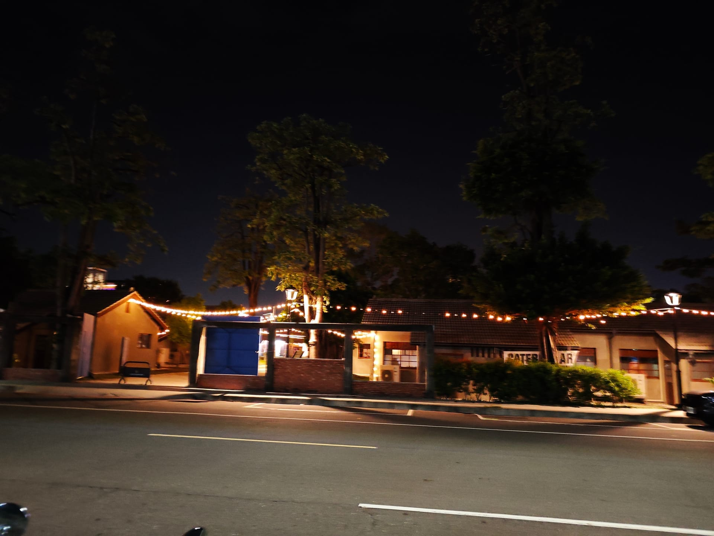

歷史沿革 (時間軸)
「前鎮」地名源於明鄭時期，當時為了防禦與開發，在此設立鎮營，故名為前鎮。隨時間推移，從傳統漁村蛻變為今日的都會中心。
地理與氣候
- 位置：位於高雄市西南部，北臨苓雅區，東鄰鳳山區，南接小港區，西臨台灣海峽。
- 地形：地勢平坦，屬海岸平原，市區內有前鎮河流經並注入高雄港。
- 水文：前鎮河為重要水系，經整治後如今已成為綠意盎然的水岸休憩區。
- 氣候：屬熱帶季風氣候，全年溫暖，夏季多雨、冬季乾燥，年均溫約25℃。
經濟與交通
- 核心產業：前鎮科技產業園區（原加工出口區）、高雄軟體科技園區、亞洲新灣區為高雄經濟轉型重點。
- 商業娛樂：擁有夢時代購物中心、SKM Park Outlets等多功能大型商場，商業活絡。
- 軌道運輸：高雄捷運紅線（設有前鎮高中站等）、高雄環狀輕軌貫穿全區，交通極為便利。
- 海空交通：緊鄰高雄港核心港區與高雄港埠旅運中心，鄰近小港國際機場。
人口統計
前鎮區發展歷史悠久，因早期工業化吸引大量就業人口，目前人口約 18萬人，為高雄市人口密集區之一。
- 人口結構：早期因加工出口區吸引中南部各縣市移民，擁有多元豐富的常民文化。
- 發展趨勢：隨著亞洲新灣區及新興住宅區（如五甲公園周邊、獅甲地區）的發展，吸引許多年輕家庭與都會白領入住，人口結構逐漸都會化。
學區與教育
前鎮區擁有完善的各級學校教育資源，滿足學區內的就學需求。
- 高級中學：高雄市立前鎮高級中學、高雄市立瑞祥高級中學（含國中部）。
- 國民中學：前鎮國中、獅甲國中、瑞豐國中、光華國中、興仁國中等。
- 國民小學：前鎮國小、獅甲國小、復興國小、瑞豐國小等十餘所小學。
公園與設施
從工業城鎮轉型，如今的前鎮擁有許多設計感十足的公共建築與大片綠地。
- 大型綠地：五甲公園、勞工公園、前鎮河畔公園。
- 公共設施：高雄市立圖書館總館（曾獲評台灣最美圖書館）、高雄展覽館。
- 歷史活化：台塑王氏昆仲公園，將昔日工業廠房保留轉化為見證歷史的休閒園區。
宗教信仰
前鎮區信仰多元，除現代化的教堂外，也有許多歷史悠久、香火鼎盛的在地廟宇。
- 傳統廟宇：前鎮廣濟宮（主祀保生大帝）、草衙鎮南宮、籬仔內代天院、獅甲廣濟宮等。
- 信仰特色：伴隨早期漁港與農村發展的王爺與媽祖信仰，以及後來移入的各方神祇，見證了前鎮的移民社會發展。
都會景點與購物商圈
前鎮區是高雄「亞洲新灣區」的核心，匯集了前衛的現代建築、國際級的展覽空間與大型購物中心，更是體驗港都日夜風情的最佳去處！

🛍️ 夢時代購物中心
全台知名的夢時代購物中心不僅是前鎮區的地標，更是高雄人週末休閒的首選。這裡結合了百貨商場、美食餐飲與頂樓的摩天輪，提供全家大小舒適寬敞的室內休閒空間，滿足所有購物與娛樂需求。

🚢 高雄港埠旅運中心
充滿未來感與銀色流線造型的「高雄港埠旅運中心」宛如一艘停泊在港灣的巨型星際戰艦。它不僅是迎接國際郵輪的重要門戶，也是亞洲新灣區最引人注目的全新地標，漫步在戶外的觀海平台，能將壯麗的高雄港景收進眼底。

📚 高雄市立圖書館總館
榮獲多項國際綠建築大獎的高市總圖，以「館中有樹，樹中有館」的設計理念聞名。夜晚點燈後猶如一座璀璨的玻璃發光體，無論是進館沉浸在書香中，還是在頂樓花園遠眺亞灣區的美景，都讓人流連忘返。

🏢 中鋼集團總部大樓
以獨特的幾何鑽石外觀矗立於亞洲新灣區的中鋼總部大樓，是高雄最具代表性的現代建築之一。它不僅展現了鋼鐵的堅韌與現代藝術的結合，更是高雄由重工業城市轉型為經貿科技重鎮的最佳縮影。

🏙️ 高雄85大樓
曾是台灣第一高樓的85大樓，其獨特的「高」字型外觀設計深深烙印在每個高雄人的記憶中。周邊緊鄰高雄軟體園區與多功能經貿園區，是見證高雄發展歷史與天際線變遷的重要地標。

🏎️ SKM Park Outlets
由傳統商場轉型而成的 SKM Park Outlets，不僅引進了眾多國際知名品牌，更擁有全台唯一的鈴鹿賽道樂園。將逛街購物與刺激的卡丁車賽道結合，為年輕人與親子遊客帶來充滿速度感的玩樂體驗。

🚲 前鎮之星
這座宛如童話中傑克與魔豆藤蔓般純白優雅的自行車天橋，橫跨了繁忙的中山路口。它不僅保護了單車族與行人的安全，更以其前衛流線的造型成為了攝影愛好者與網美打卡的熱門景點。

🌳 台塑王氏昆仲公園
這裡曾是台灣塑膠工業的發源地，如今經過精心規劃，將昔日的舊廠房與大片老樹保留，轉型為充滿歷史韻味的文化公園。漫步在綠蔭與紅磚牆之間，能深刻感受到高雄工業發展的歷史軌跡。